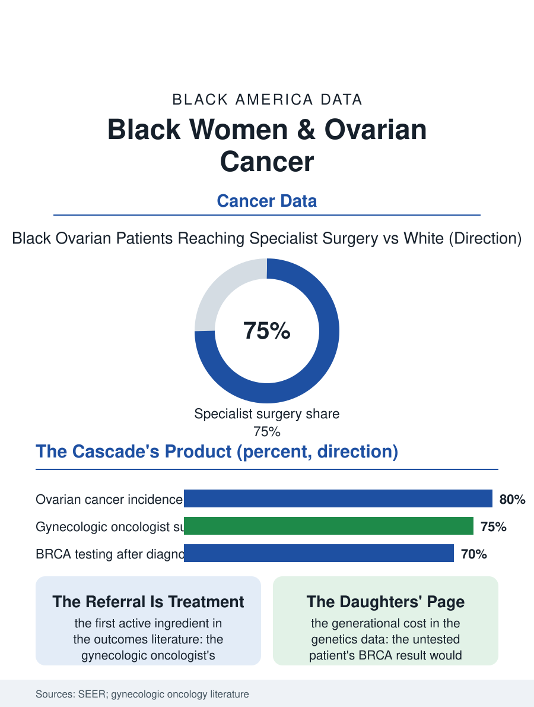

Black Public Health
The Specialist's Door: Black Women and Ovarian Cancer
No screening exists, the specialist's referral is itself a treatment, and the genetic test's absence is billed to the daughters. The ovarian file.

Ovarian cancer is the gynecologic file's silent disease, its symptoms vague, its screening nonexistent, its diagnosis usually advanced, and its pattern in Black women runs against the section's usual direction in one respect: the incidence is lower than the white rate, while the survival, stage for stage, and the receipt of the guideline surgery and chemotherapy run behind. This article reads the ovarian file.
No Screen, Late Stage
The biology file is the file's frame: the ovary's cancers declare themselves through the bloating, the early satiety, the pelvic discomfort that the primary care encounter files under the gastrointestinal and the menopausal headings for the season the tumor uses to spread, and the screening trials' verdict, that no test of the blood or the ultrasound finds the cancer early enough to change the mortality, stands in the current guidelines, so that the stage at diagnosis, advanced in three quarters of cases in every population, is substantially the disease's own doing in a way the other cancers' stage files are not. The Black incidence's lower rate in the registry data carries the reproductive file's factors, the parity and contraceptive history's protective effects distributed by the family files, while the survival gap within the stage is the file's system component: the debulking surgery by the gynecologic oncologist, the specialty whose involvement the guidelines make the standard and whose receipt in the hospital data is the Black patient's lower figure, the intraperitoneal and dose-dense chemotherapy regimens' delivery, and the maintenance era's targeted drugs, whose genetic gate, the BRCA testing of the genetics file, is ordered at the lower rate in the pattern that compound across the cascade. The symptom diary the advocacy organizations teach, the bloating and satiety recorded against the calendar rather than remembered at the visit, is the file's small technology of self-surveillance, converting the vague season into the documented pattern the encounter cannot file away, and its distribution is the community education file's work in the pattern of the other cancers' awareness campaigns.
The Specialist's Gate
The volume file for the ovarian surgery is the specialty's own: the gynecologic oncologist's involvement improves the survival in the literature's consistent finding, making the referral to the specialist the treatment's first active ingredient, and the referral's distribution, by the hospital of presentation and the insurance's network, is the file's delivery variable, with the safety-net presentation's transfer to the specialty center being the pathway the systems that audited it found leakiest. The genetic file's stakes are the family's as well as the patient's: the BRCA result reclassifies the daughters' and sisters' risks and opens their prevention files, so that the testing gap's cost is paid by the next generation's cancers as well as the current one's targeted therapy. The clinical trial file is the maintenance era's: the PARP inhibitors' trials enrolled the Black patient at the trials file's usual fraction, and the real-world maintenance uptake in the claims data follows the testing and the specialty's distribution in cascade.
The Quiet Ledger
The ovarian file closes on the survivorship's particular burden, because the advanced diagnosis's course is the recurrence's calendar, the remission measured against the marker's rise, the treatment lines succeeding each other with the intervals the patient's file learns to read, a course whose quality is the palliative and specialty system's work and whose distribution is the access map's. The research file's frontier, the early detection's biomarkers still failing their trials and the prevention's opportunistic salpingectomy, the tube's removal at the other surgeries the woman is already having, is the file's one structural hope, its adoption being a surgical practice pattern whose distribution the next registry will read. The registries count the cases in the thousands of women each year, the Black incidence lower, the Black survival's deficit the cascade's. The file's last entry is the specialist's door, behind which the surgery is done by the hands the guidelines intend, reached by the referral the presentation hospital either makes or misses, in the week the diagnosis is fresh, which is the ovarian file's whole system in a single transfer, and the measure by which its survival gap will narrow or stand. The transfer, in the end, is the therapy's first dose.
More in Black Public Health
Hypertension Among Black Adults: Prevalence, Control, and Consequences
About 55 percent of Black adults have hypertension — the highest rate of any U.S. group. Prevalence, onset, control, and the stroke, heart, and kidney consequences in the data.
Diabetes Among Black Adults: Prevalence and Complications
Nearly one in five Black adults has diabetes, diagnosed or undiagnosed — and its complications fall with particular weight. The CDC data on prevalence, control, and outcomes.
Black Life Expectancy: The Gap at Birth and Its Causes
Black life expectancy at birth is about 73 years, roughly five years below the national figure — the summary measure of every health gap in this section. The CDC data.
Source: National Cancer Institute SEER program; gynecologic oncology treatment and genetic testing literature.